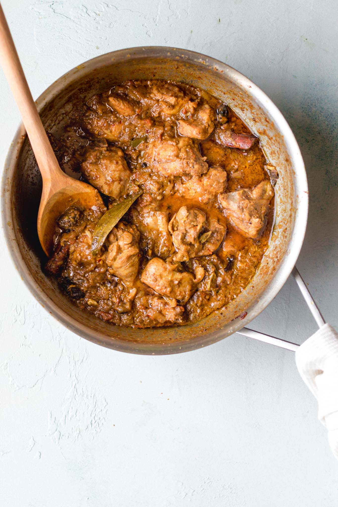

Biryani is an intricate rice dish made with layers of curried meat and rice. Given its use of adornments and luxurious finishes, it’s no surprise that biryani has roots in Persian cuisine.
Prepare the biryani masala (or use store-bought) and marinate the chicken.
Cook the chicken curry. While it is cooking over low heat, prepare the rice.
Bring a pot of water to a boil and parboil the rice. Drain and set aside.
Layer half of the rice, all of the chicken, and then the remaining rice on top. Add the finishing touches.
Allow steam to develop, then lower the heat and let the flavors meld.
Voila! We now know how to make Chicken Biryani!